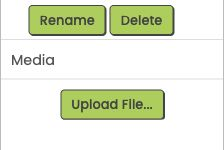

<!doctype html><html lang="en"><meta charset="utf-8"><meta name="viewport" content="width=device-width,initial-scale=1"><title>Find Media and Upload File</title><style>*{box-sizing:border-box}body{margin:0;background:#f4f8f6;color:#203b35;font:17px/1.4 Arial,sans-serif}.picture{width:660px;height:345px;position:relative;background:white;padding:20px}h1{font-size:22px;margin:0}p{margin:5px 0;color:#566d68}.real{position:absolute;left:330px;top:100px;width:280px;height:187.5px;border:1px solid #b9cfc6}.mark{position:absolute;border:3px solid #b64419;pointer-events:none}.media{left:335px;top:159px;width:264px;height:39px}.upload{left:402px;top:207px;width:139px;height:45px}.label{position:absolute;left:20px;width:275px;font-weight:700;color:#903412}.one{top:164px}.two{top:214px}.line{position:absolute;height:3px;background:#b64419;transform-origin:left center}.line1{left:220px;top:179px;width:115px}.line2{left:273px;top:230px;width:129px}.note{position:absolute;left:20px;bottom:14px;font-size:14px;color:#566d68}</style><main class="picture"><h1>Right side of Designer</h1><p>Look below Components and the Rename / Delete buttons.</p><span class="mark media"></span><span class="mark upload"></span><span class="label one">1 Find Media</span><span class="label two">2 Click Upload File…</span><span class="line line1"></span><span class="line line2"></span><span class="note">Actual MIT editor screenshot · boxes and labels added for this guide.</span></main></html>